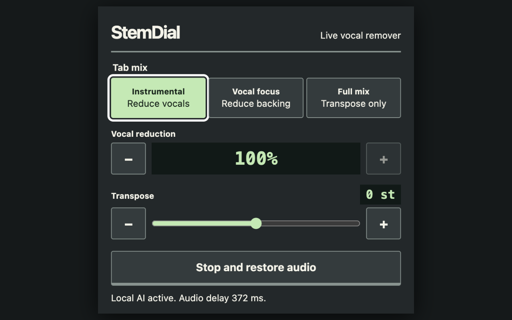

Remove the vocal from any tab.
Instrumental, vocal focus, or transpose only. The separation model runs on your GPU, inside the browser. Nothing is uploaded.
Download StemDial Install steps
Chrome 116 or newer on desktop, with WebGPU. Without WebGPU it falls back to a stereo filter and says so in the popup.

Three modes
- Instrumental
- The singer drops out. Bass and instruments stay.
- Vocal focus
- The voice stays. The backing is reduced.
- Full mix
- Nothing is separated. Transpose only. The separator still adds its audio delay.
Instrumental and Vocal focus keep separate reduction levels, in 5% steps. Transpose covers 12 semitones each way without changing tempo. The popup shows the audio delay measured on your machine.
Install
- Download the release zip and extract the
stemdialfolder. - Open
chrome://extensions, turn on Developer mode, and choose Load unpacked. Pick that folder. - Play a song, open StemDial, and press Start on this tab.
Chrome installs extensions from a folder or from the Web Store. A self-signed .crx is rejected unless an enterprise policy allows it, which is why the release is a zip.
Audio stays here
The extension captures the tab you start, separates it locally, and plays the result in the same tab. It does not record, store, or send audio anywhere. The model and ONNX Runtime are bundled in the package.